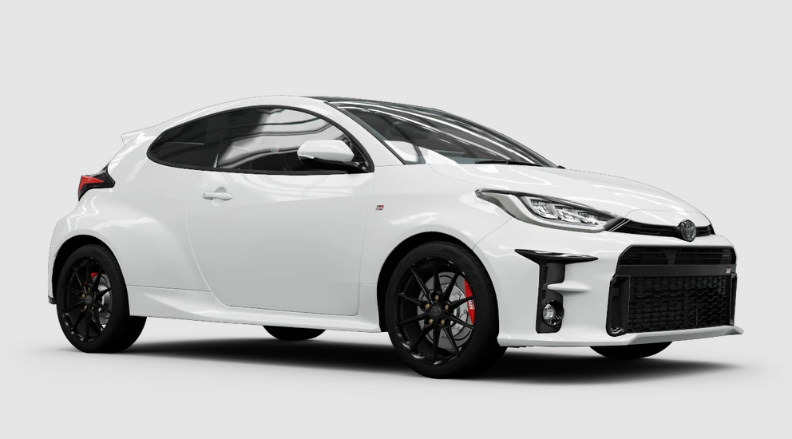

Toyota GR Yaris
₱14,000/day
Overview: The Toyota GR Yaris is a compact powerhouse built for rally enthusiasts. With its lightweight structure and dynamic performance, it offers a thrilling ride on both the road and the track. It's engineered for precision and adrenaline-pumping speed.
- Engine: 1.6L Turbocharged I3, 257 HP
- Drivetrain: AWD (All-Wheel Drive)
- Transmission: 6-speed manual
- Features: GR-Four AWD system, Torsen LSD, Adjustable suspension
- Seating Capacity: 4 passengers
Why Rent? A perfect choice for those seeking a high-performance, rally-inspired hatchback with superb handling and a sporty edge. Whether you're on the track or the street, the GR Yaris delivers an unforgettable driving experience.
← Back to Cars